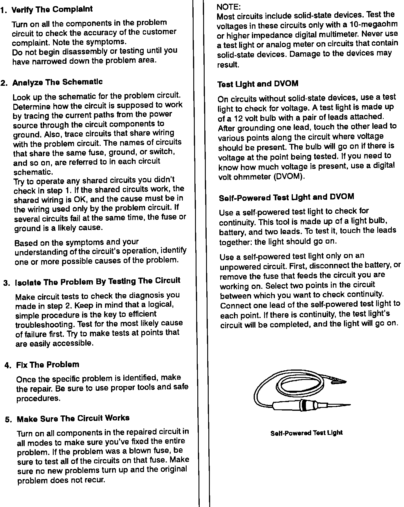
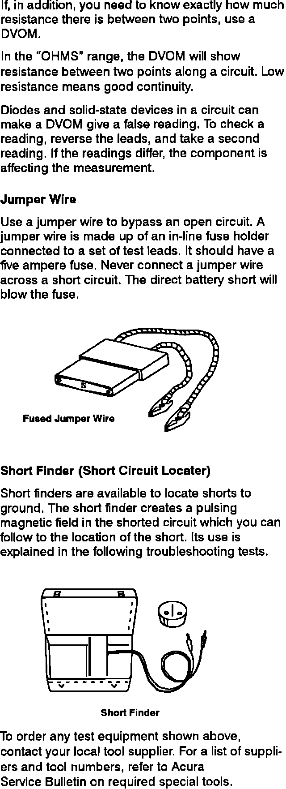

Operation CHARM
: Car repair manuals for everyone.
Home
>>
Acura
>>
1992
>>
Legend Sedan V6-3206cc 3.2L SOHC FI
>>
Repair and Diagnosis
>>
Lighting and Horns
>>
Daytime Running Lamp
>>
Daytime Running Lamp Control Unit
>>
Diagrams
>>
Diagnostic Aids
>>
Five Step Troubleshooting
Five Step Troubleshooting
Five-Step Troubleshooting And Test Equipment:

Test Equipment:
